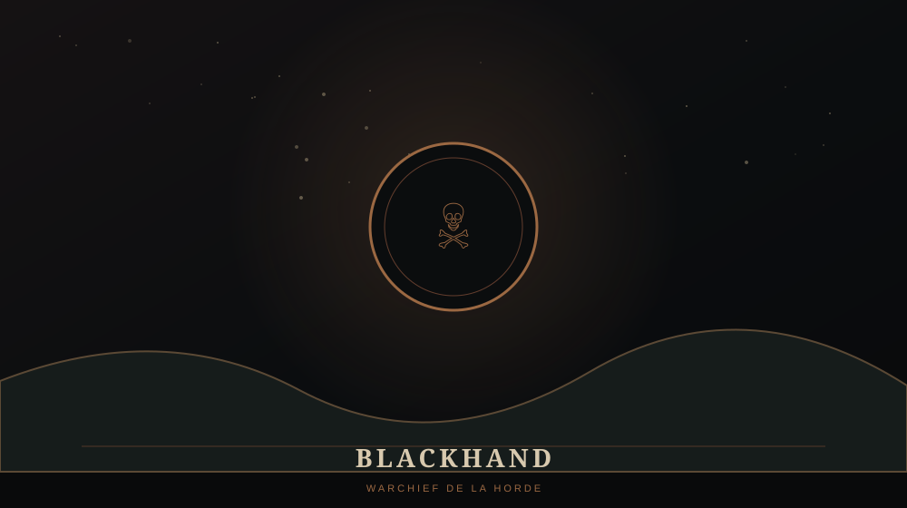

BLACKHAND

🪓 QUI EST BLACKHAND ?
Blackhand est le chef du clan Blackrock et le Warchief de la Horde pendant l'invasion d'Azeroth. Il incarne, dans Warcraft I, la puissance militaire qui menace directement le royaume de Llane Wrynn.
Son nom apparaît très tôt dans la campagne humaine, lorsque les attaques orques cessent d'être perçues comme de simples raids isolés.
⚔️ DANS WARCRAFT I
Pour les Humains, Blackhand devient progressivement le visage de l'invasion. La campagne conduit finalement les forces humaines vers Blackrock Spire, son principal bastion.
Du côté orc, la campagne montre aussi que la Horde n'est pas un bloc parfaitement uni : ambitions personnelles, magie et luttes de pouvoir se mêlent à la guerre contre les Humains.
👨👦 HÉRITAGE
Blackhand est également le père de Rend et Maim, deux noms qui continueront d'apparaître dans l'histoire de la Horde.
⚠️ LORE ULTÉRIEUR / SPOILERS
Le lore ultérieur développe fortement les coulisses de son règne : Gul'dan et le Shadow Council exercent une influence considérable sur lui. Orgrim Doomhammer finit par le défier et prendre la tête de la Horde avant les événements de Warcraft II.
Le clan Blackrock restera extrêmement important bien après Warcraft I, au point que Blackrock Mountain deviendra l'un des lieux les plus emblématiques de la saga.